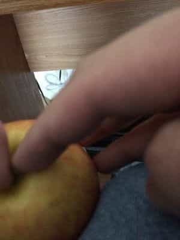
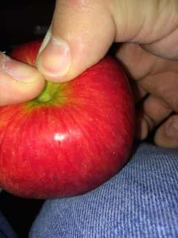
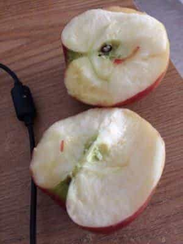
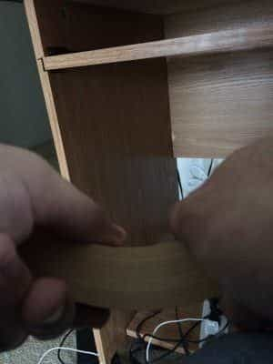

< < < Back
How To Develop Demonic Grip Strength To Rip Apart Apples With Your Bare Hands – Return Of Kings
Yes, it appears that Larsen is writing yet another grip training article. As I’ve repeatedly stated, if you were to train any one aspect to develop real world functional strength, it would have to be the grip. Anything you’re going to lift will require you to take hold of it and grasp it in your hands, correct?
The techniques discussed in this article are not purely training techniques, but can be considered half training technique, and half tricks to impress your friends and intimidate your enemies. They will give your forearms and fingers a tremendous workout, but due to the expense and amount of detritus these methods produce, I don’t do these regularly.
Ripping Apples In Half
This trick is one of the easiest ways to show off the strength of your hands, fingers, and forearms (and if you’ve been following my instructions, that strength should be great indeed). In addition to being something that will seem unreal to the average people you interact with, this is actually a useful technique should you find yourself wanting to share an apple but lack any sort of sharp implement to cut it in half.
To begin with, you’ll need an apple—I specify APPLE, as attempting to tear any other sort of pome such as a pear, quince, or medlar (or for that matter, a drupe such as a peach or apricot) will end with a spray of fruit juice flying into your face, the fruit in question being squashed, and you being thoroughly embarrassed.
Remove the stem of the apple. Then place your index fingers into the end of the apple opposite the stem (See below, but bear in mind when you do this technique this end points down).

Then press your thumbs into the stem end, holding the apple so the stem end is pointing upwards.

Apply pressure inwards with the index fingers, while applying pressing outwards with the thumbs. You should begin to feel and hear the apple cracking.
Once you’ve achieved this, you can continue applying pressure until the apple splits. Or, for those who are not as strong, you can drive one or both of your thumbs into the crack you made, and apply pressure that way while continuing the same index finger pressure.
Split the apple, and then eat it. Or not, whatever.

Ripping Phone Books
Ripping a phone book in half has become a pop culture standard of strength and vigor, mainly due to the fact that most people don’t know how to do it—what if I told you that it is, in fact, one of the easiest strength feats? Indeed, ripping a phone book in half is the first “Strongman” style feat of strength that I ever achieved—and as I have said before in these pages, I am not naturally a strong man, it’s something I had to work at.
The problem most people have when trying to tear a phone book (as I feel most men have at some point in their lives) is that it’s nigh—impossible to rip a phone book with the same motion you would use to rip a piece of paper-pinching it with the fingers and moving the hands away from each other will get you nowhere fast.
To properly rip the phone book will require proper technique. To begin with, hold the phone book like this, folding the book widthwise:

This is not a phone book, but it illustrates the proper position
Begin to apply pressure with the fingers and thumbs, pull your thumbs apart while simultaneously pressing the pages together with your other fingers. You should begin to audibly hear the paper ripping—if this is your first phone book you will likely not rip through the book clean. Even the smallest rip is a sign of progress! Hold this pressure until you have ripped about half of the pages in the phone book.
The key from here is to keep your thumbs in the same place and orientation they started in, so you can complete the tear in the phone book. Also don’t be afraid to dig your thumbs into the tear you’ve made.
Once you have completed the tear (it will almost always be “shallow”, encompassing just an inch or two of each page), you can grip the book as normal and rip it in the usual way.
My first phone book rip took half an hour of concerted effort, and yours will likely be similar. As with most things, you will become stronger and develop a technique that fits your hands specifically, making it easier as time goes on.
More?
There are other grip “tricks” you can learn as your hands become stronger—such as crushing apples with one hand (it’s much easier said than done, just grab the apple in a claw grip and apply pressure), or even popping soda cans with the hands—the last of these is purely theoretical for me, but I have seen it done.
And with that, I have said literally all I know about training the grip. Your long national nightmare of me talking about hand and finger strength is at an end!
Read More: 4 Esoteric Methods For Increasing Your Grip Strength